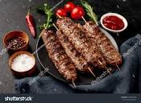

Lamb kebabs

Indian style kebab recipe:
These lamb seekh kebabs are a spicy and extremely flavorful recipe that will surely be a hit at any outdoor party.
Ingredients list:
- 2 pounds lean ground lamb
- 2 medium onions, finely chopped
- ½ cup fresh mint leaves, finely chopped
- ½ cup cilantro, finely chopped
- 1 tablespoon ginger paste
Steps:
Step 1
- Mix ground lamb, onions, mint, cilantro, ginger paste, and chile paste together in a large bowl. Season with cumin, coriander, paprika, salt, and cayenne.
Cover and chill in the refrigerator for 2 hours. Soak skewers in cold water.
Step 2
- Divide lamb mixture into 8 equal portions; mold portions onto skewers to form a sausage shape.
Refrigerate skewers until you are ready to grill.
Step 3
- Preheat an outdoor grill for high heat and brush the grate liberally with oil.
Step 4
- Cook skewers on the preheated grill, turning frequently, until nicely browned on all sides and meat is no longer pink in the center,
about 10 minutes. An instant-read thermometer inserted into the center should read at least 160 degrees F (71 degrees C).